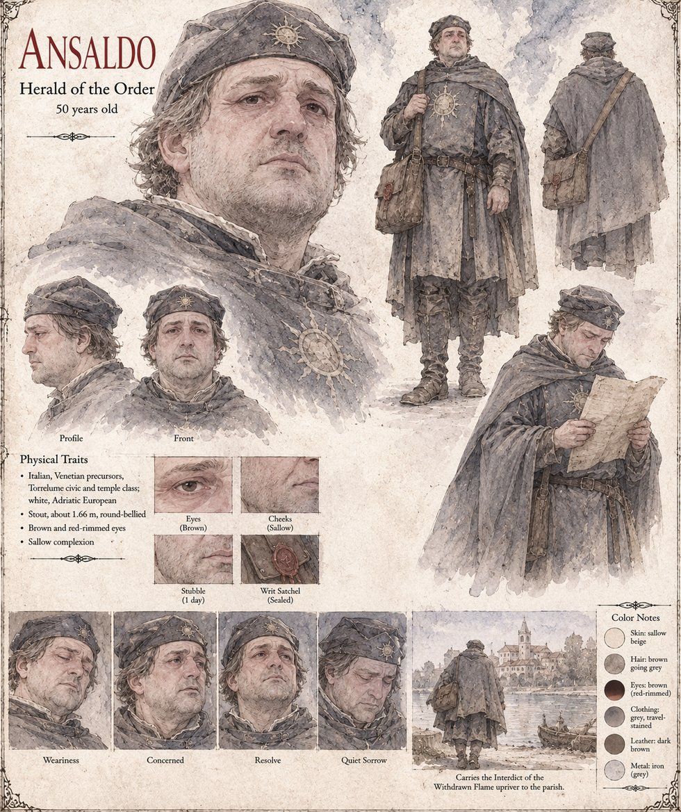

Ansaldo
Herald of the Order · twenty-six years of delivering writs · 50
The herald who carries the Interdict of the Withdrawn Flame upriver is a stout, tired, inoffensive man of fifty named Ansaldo, who had delivered three hundred writs for the Order in twenty-six years and knows from the weight of the wax that this one is heavier. He has survived the Order by the simple method of never reading what he delivers, and on the nine days of the river he thinks chiefly about his sister’s wedding and about whether the eel-seller in the third boat will let him have a discount, and about nothing else at all, on purpose. At the ford he asks Bortolo Zanni the fare, as he has at every ford for twenty-six years; Bortolo, who has worked out what the writ must contain, looks at the wax seal and at the herald’s grey, civil, unsuspecting face, and for the space of three breaths cannot say the number. He says it is by arrangement. The herald takes it for the rudeness of the provinces, pays a soldo more than he need have, and goes up the east-bank road without looking behind him. Gaudenzio receives the writ in the parish church at the hour of the Kindling. In the years afterward Ansaldo thinks of the eel-seller with an odd tenderness.
The manuscript gives his age (fifty), his stoutness, tiredness and grey face, and no height, hair or eye colour. The sheet’s build of about 1.66 m, round belly, red-rimmed brown eyes, sallow skin, one-day stubble, grey surcoat and cap with a small sun emblem, travel cloak and sealed leather satchel are its own, as are its panels Weariness, Concerned, Resolve and Quiet Sorrow and its panel of him reading a folded writ, which the manuscript says he never does. Its scene Carries the Interdict of the Withdrawn Flame upriver to the parish. follows the manuscript, but draws him walking along a riverbank toward a village, where the manuscript sends him upriver for nine days and has him land at the ford.
“a stout, tired, inoffensive man of fifty named Ansaldo, who had delivered three hundred writs for the Order in twenty-six years”